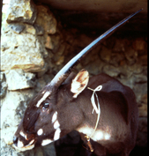
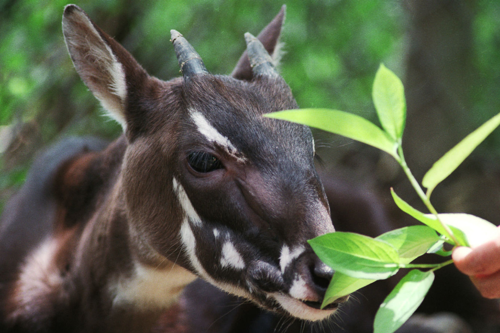
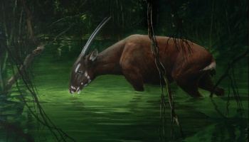
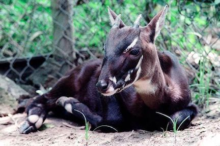
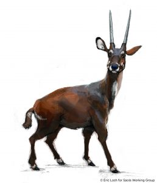

Basic Information
Saola's are cousins of cattle but resemble antelope. Saola is pronounced (sow-la). The saola's scientific name is Pseudoryx Nghetinhensis. They have 2 sharp parallel horns that can reach 20 inches, white marks on their face, and large maxillary glands which could be used to mark territory or attract mates. Saola's are only found in the Annamite Mountains of Vietnam and Laos. Although these creatures have two, not one horn, they are often called the Asian Unicorn because of how rare they are. The population is not known for sure but it is estimated that there is only 250-300 of these creatures.
   Attributes of a Saola
-

- High genetic and biological distinctiveness;there is only one species of Saola in the world so, much irreplaceable biodiversity rests within the genes of one Saola
- Degree of endangerment
- Paucity of conservation attention, compared to many other better known species
- The ‘conservation flagship’ of a global biodiversity hotspot, the Annamite Mountains.
Rarity
This animal is so rare because it is critically endangered. It is believed that they are so endangered because of effects on their habitat and hunting.The forests are slowly disappearing, causing the saola to have less and less habitat. Also,Saola often get caught in snares in the forest set for other animals like boar and deer.
The World Widelife Fund (WWF) is an organization that has been involved in the protection of Saola's since their discovery in 1992. They have focused on strengthening and establishing protected areas by helping the Vu Quang Nature Reserve. In the past four years, they have created two new adjacent saola reserves in the Thua-Thien Hue and Quang Nam provinces.